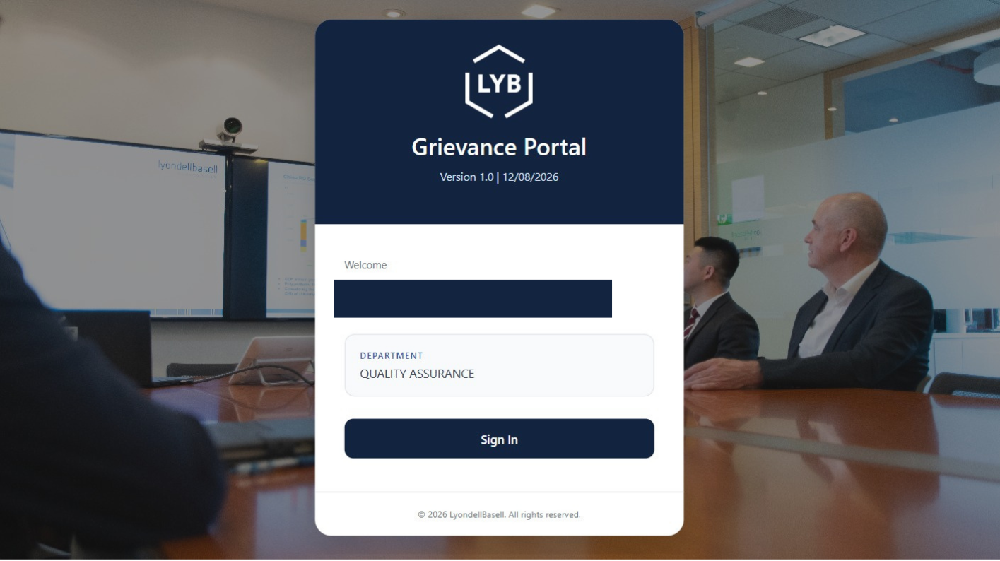
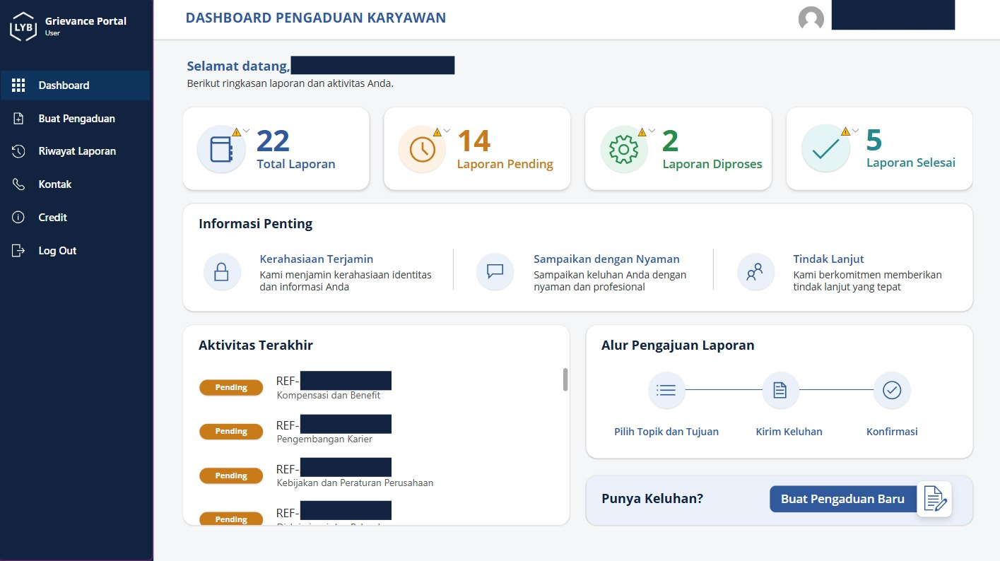
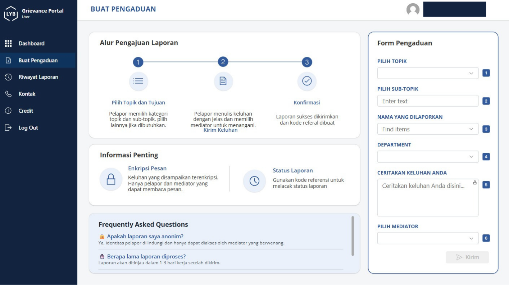
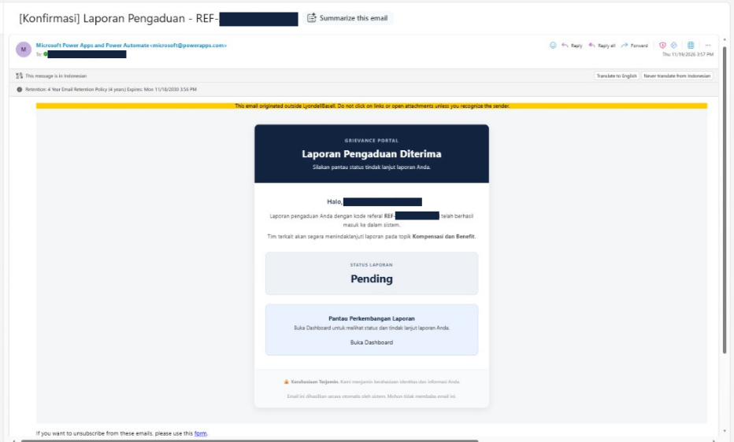
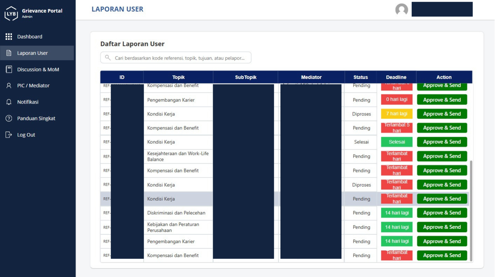
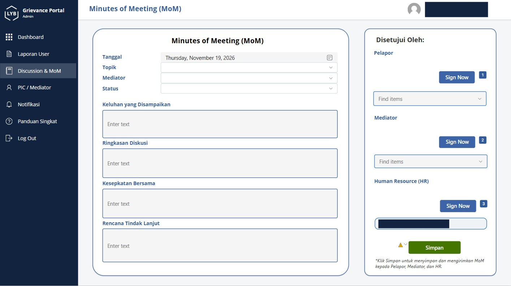
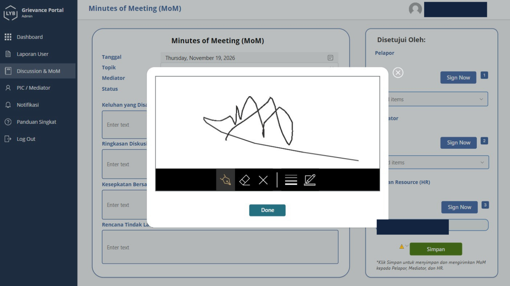
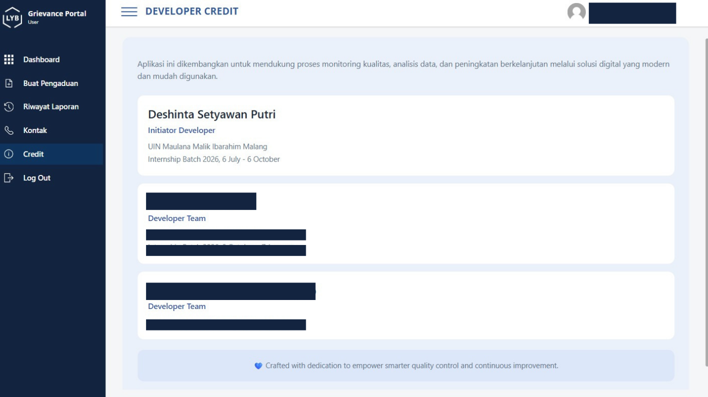

Grievance Management System
Microsoft Power Platform
Power Apps
SharePoint
Power Automate
HTML
HRIS
Project Description
Grievance Management System is a digital application designed to streamline employee complaint and feedback management. The system provides a structured platform for handling employee concerns, ensuring that every submission can be managed transparently and efficiently.
Screenshots








Key Features & Impact
- Digital Complaint Submission: Enables employees to submit feedback and complaints through a centralized digital platform.
- Structured Complaint Management: Organizes employee grievances into a structured system to support more efficient handling.
- Transparent Complaint Handling: Supports a more transparent and organized process for managing employee concerns.
- Impact: Digitized the employee grievance management process, making feedback and complaints easier to manage systematically and responsively.